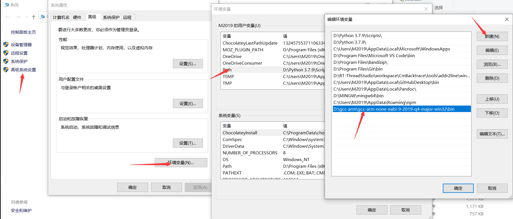
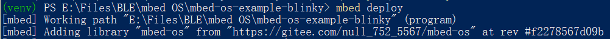
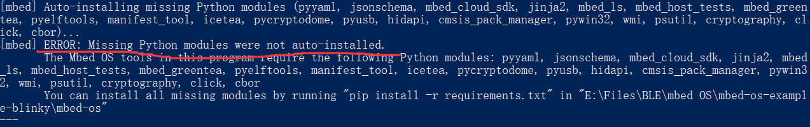
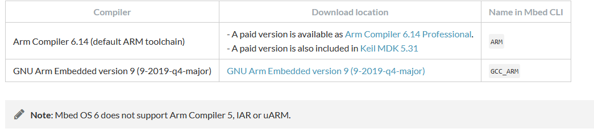

3. mbed OS quick start
3.1. mbed OS依赖
首先先要搞清楚mbed OS有哪些依赖：
build依赖：
python2或者3
Mercurial 这个是依赖包，如果需要执行mbed deploy则需要这个软件来处理依赖
pip3
git
pip中需要安装requirement.txt中所有包
mbed 生态提供了以下几种工具：
mbed cli 最新的windows版本是2018年的，估计停止更新了，所以我们不能选择[mbed cli for windows](Releases · ARMmbed/mbed-cli-windows-installer (github.com))来安装了
3.2. 开始安装
第一步
先安装git和python3
sudo apt install python3 python3-pip git mercurial
windows 环境下 mercurial 可以直接在 pyhon 里安装，输入：
python3 -m pip install mercurial
第二步修改pip国内源
改下pip3为国内源 ，因为后面pip会装很多东西。
新建文件~/.pip/pip.conf
输入
[global]
index-url = https://pypi.tuna.tsinghua.edu.cn/simple
[install]
trusted-host=mirrors.aliyun.com
windows 更换国内源如下：直接在 user 目录中创建一个 pip 目录，如：C:\Users\xx\pip ，新建文件 pip.ini，内容如下：
[global]
index-url = https://pypi.tuna.tsinghua.edu.cn/simple
第三步安装pip3中的mbed
通过pip3来安装mbed-cli
python3 -m pip install mbed-cli
安装完了之后确认下mbed的版本号（一定要确认版本是1.10以后的版本才好用）：
mbed-cli --version
1.10.5
mbed --version
1.10.5
如果后续需要升级的话，执行命令：
python3 -m pip install -U mbed-cli
第四步下载GCC工具链
可以用命令来安装
sudo apt-get install gcc-arm-none-eabi
之后就可以直接编译了
也可以直接去官方下载对应的gcc-arm-none-eabi-9-2019-q4-major-x86_64-linux.tar.bz2包解压之后，添加对应的路径
mbed config -G GCC_ARM_PATH “/opt/gcc-arm-none-eabi-9-2019-q4-major/bin”
最后只要命令，可以显示即可：
arm-none-eabi-gcc -v
windwos 环境下需下载 gcc-arm-none-eabi-9-2019-q4-major-win32.zip ，由于下载速度很慢，我在企业微信的网盘里放了一份备份，在 “蓝牙相关资料 - IDE相关 - gcc-arm-non-eabi” 里。解压缩该文件，将其 bin 目录对应的路径添加到用户 PATH 环境变量里，

输入
arm-none-eabi-gcc -v
验证是否安装环境成功。
第五步导入官方代码
官方在github账号上提供了许多示例程序，比如
蓝牙相关的sample mbed-os-example-ble
经典的闪灯程序mbed-os-example-blinky
我们以mbed-os-example-blinky 闪灯程序为例，正规流程是：
先git clone 代码
git clone https://github.com/ARMmbed/mbed-os-example-blinky.git
进入文件夹cd mbed-os-example-blinky
然后执行：
mbed deploy
这边我们会发现mbed deploy会非常慢；
这边我解释一下mbed deploy做了哪些事情
第一件事情是下载mbed-os整个软件包到sample目录下
相当于执行了
git clone https://github.com/ARMmbed/mbed-os.git
这一步有以下优化方案：
直接用将仓库挪到gitee中(这个可以自行百度)
然后修改sample下面的
mbed-os.lib文件修改里面的路径
第二件事请，下下来mbed-os之后，会执行pip install -r requirement.txt
requirement.txt中包含了很多pip的依赖包，这个我们已经改了国内源，就已经很快了。
修改过mbed-os.lib之后，再次执行mbed deploy
在 win10 powershell 里执行 mbed deploy 可能会在这里一直卡着不动：

这里后台在执行 git clone 的操作，我这里等了大概 20 分钟，一直在这不动，而且文件夹的大小一直为 1.03GB 不变，应该是哪里出现了 bug，此处多按几下回车，

然后发现报错，需要手动安装 python 环境，进入 mbed-os 目录使用 pip install -r requirements.txt 。
第六步开始编译代码
编译代码之前需要配置两个因素,这里配置过之后就不需要配置了：
配置板子的配置，
板子的选择有以下选择，可以找到支持的开发板NUCLEO_WB55RG：
ADV_WISE_1510, ADV_WISE_1570, ARCH_MAX, ARCH_PRO, ARDUINO_NANO33BLE, ARM_CM3DS_MPS2, ARM_MPS2_M0, ARM_MPS2_M0P, ARM_MPS2_M3, ARM_MPS2_M4, ARM_MPS2_M7, ARM_MUSCA_B1, ARM_MUSCA_B1_NS, ARM_MUSCA_S1, ARM_MUSCA_S1_NS, B_L4S5I_IOT01A, CY8CKIT064B0S2_4343W, CY8CKIT_062S2_43012, CY8CKIT_062_BLE, CY8CKIT_062_WIFI_BT, CY8CPROTO_062S3_4343W, CY8CPROTO_062_4343W, CYSBSYSKIT_01, CYTFM_064B0S2_4343W, CYW9P62S1_43012EVB_01, CYW9P62S1_43438EVB_01, DISCO_F413ZH, DISCO_F429ZI, DISCO_F469NI, DISCO_F746NG, DISCO_F769NI, DISCO_H747I, DISCO_H747I_CM4, DISCO_H747I_CM7, DISCO_L072CZ_LRWAN1, DISCO_L475VG_IOT01A, DISCO_L476VG, DISCO_L496AG, DISCO_L4R9I, DISCO_L562QE, EFM32GG11_STK3701, EFM32GG_STK3700, EP_AGORA, EP_ATLAS, EV_COG_AD3029LZ, EV_COG_AD4050LZ, FF1705_L151CC, FF_LPC546XX, FVP_MPS2_M0, FVP_MPS2_M0P, FVP_MPS2_M3, FVP_MPS2_M4, FVP_MPS2_M7, GD32_F307VG, GD32_F450ZI, GR_LYCHEE, GR_MANGO, HEXIWEAR, K22F, K64F, K66F, K82F, KL25Z, KL43Z, KL46Z, KW41Z, LPC1114, LPC1768, LPC54114, LPC546XX, MAX32600MBED, MAX32620FTHR, MAX32625MBED, MAX32625PICO, MAX32630FTHR, MIMXRT1050_EVK, MOTE_L152RC, MTS_DRAGONFLY_F411RE, MTS_DRAGONFLY_F413RH, MTS_DRAGONFLY_L471QG, MTS_MDOT_F411RE, NRF52840_DK, NRF52_DK, NUCLEO_F070RB, NUCLEO_F072RB, NUCLEO_F091RC, NUCLEO_F103RB, NUCLEO_F207ZG, NUCLEO_F303K8, NUCLEO_F303RE, NUCLEO_F303ZE, NUCLEO_F401RE, NUCLEO_F411RE, NUCLEO_F412ZG, NUCLEO_F413ZH, NUCLEO_F429ZI, NUCLEO_F439ZI, NUCLEO_F446RE, NUCLEO_F446ZE, NUCLEO_F746ZG, NUCLEO_F756ZG, NUCLEO_F767ZI, NUCLEO_G031K8, NUCLEO_G071RB, NUCLEO_G474RE, NUCLEO_H743ZI2, NUCLEO_H7A3ZI_Q, NUCLEO_L073RZ, NUCLEO_L152RE, NUCLEO_L432KC, NUCLEO_L433RC_P, NUCLEO_L452RE_P, NUCLEO_L476RG, NUCLEO_L486RG, NUCLEO_L496ZG, NUCLEO_L496ZG_P, NUCLEO_L4R5ZI, NUCLEO_L4R5ZI_P, NUCLEO_L552ZE_Q, NUCLEO_WB55RG, NUMAKER_IOT_M252, NUMAKER_IOT_M263A, NUMAKER_IOT_M487, NUMAKER_PFM_M453, NUMAKER_PFM_M487, NUMAKER_PFM_NANO130, NUMAKER_PFM_NUC472, RHOMBIO_L476DMW1K, RZ_A1H, S1SBP6A, S5JS100, SDP_K1, SDT32620B, SDT32625B, SDT52832B, SDT64B, SFE_ARTEMIS, SFE_ARTEMIS_ATP, SFE_ARTEMIS_DK, SFE_ARTEMIS_MODULE, SFE_ARTEMIS_NANO, SFE_ARTEMIS_THING_PLUS, SFE_EDGE, SFE_EDGE2, TB_SENSE_12, TMPM46B, TMPM4G9, UHURU_RAVEN, WIO_3G, WIO_BG96, WIO_EMW3166, XDOT_L151CC
设置开发板 `mbed target NUCLEO_WB55RG
设置toolchain输入命令
mbed toolchain GCC_ARM根据文档我们可以知道用GCC_ARM
toolchain 有两种一种是ARM 一种是GCC_ARM

最后编译代码
mbed compile
第七步下载代码
插上 WB55 ST-Link 的 USB 口，此时会弹出一个挂载的目录，将生成的 bin 文件复制到该目录即可。bin 文件在 BUILD\NUCLEO_WB55RG\GCC_ARM\mbed-os-example-blinky.bin 。
之后会发现 LED1 蓝灯以 500ms 闪烁。